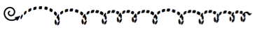
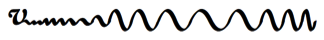

Multi-segment lines (U+EAA0–U+EB0F)
| Glyph | Description | Glyph | Description |
|---|---|---|---|
| | U+EAA0 wiggleTrillFastest Trill wiggle segment, fastest |
| U+EAA1 wiggleTrillFasterStill Trill wiggle segment, faster still |
| | U+EAA2 wiggleTrillFaster Trill wiggle segment, faster |
| U+EAA3 wiggleTrillFast Trill wiggle segment, fast |
| | U+EAA4 wiggleTrill Trill wiggle segment |
| U+EAA5 wiggleTrillSlow Trill wiggle segment, slow |
| | U+EAA6 wiggleTrillSlower Trill wiggle segment, slower |
| U+EAA7 wiggleTrillSlowerStill Trill wiggle segment, slower still |
| | U+EAA8 wiggleTrillSlowest Trill wiggle segment, slowest |
| U+EAA9 wiggleArpeggiatoUp Arpeggiato wiggle segment, upwards |
| | U+EAAA wiggleArpeggiatoDown Arpeggiato wiggle segment, downwards |
| U+EAAB wiggleArpeggiatoUpSwash Arpeggiato upward swash |
| | U+EAAC wiggleArpeggiatoDownSwash Arpeggiato downward swash |
| U+EAAD wiggleArpeggiatoUpArrow Arpeggiato arrowhead up |
| | U+EAAE wiggleArpeggiatoDownArrow Arpeggiato arrowhead down |
| U+EAAF wiggleGlissando Glissando wiggle segment |
| | U+EAB0 wiggleVibrato Vibrato / shake wiggle segment |
| U+EAB1 wiggleVibratoWide Wide vibrato / shake wiggle segment |
| | U+EAB2 guitarVibratoStroke Vibrato wiggle segment |
| U+EAB3 guitarWideVibratoStroke Wide vibrato wiggle segment |
| | U+EAB4 wiggleWavyNarrow Narrow wavy line segment |
| U+EAB5 wiggleWavy Wavy line segment |
| | U+EAB6 wiggleWavyWide Wide wavy line segment |
| U+EAB7 wiggleSquareWaveNarrow Narrow square wave line segment |
| | U+EAB8 wiggleSquareWave Square wave line segment |
| U+EAB9 wiggleSquareWaveWide Wide square wave line segment |
| | U+EABA wiggleSawtoothNarrow Narrow sawtooth line segment |
| U+EABB wiggleSawtooth Sawtooth line segment |
| | U+EABC wiggleSawtoothWide Wide sawtooth line segment |
| U+EABD wiggleGlissandoGroup1 Group glissando 1 |
| | U+EABE wiggleGlissandoGroup2 Group glissando 2 |
| U+EABF wiggleGlissandoGroup3 Group glissando 3 |
| | U+EAC0 wiggleCircularConstant Constant circular motion segment |
| U+EAC1 wiggleCircularConstantFlipped Constant circular motion segment (flipped) |
| | U+EAC2 wiggleCircularConstantLarge Constant circular motion segment (large) |
| U+EAC3 wiggleCircularConstantFlippedLarge Constant circular motion segment (flipped, large) |
| | U+EAC4 wiggleCircularStart Circular motion start |
| U+EAC5 wiggleCircularLargest Circular motion segment, largest |
| | U+EAC6 wiggleCircularLargerStill Circular motion segment, larger still |
| U+EAC7 wiggleCircularLarger Circular motion segment, larger |
| | U+EAC8 wiggleCircularLarge Circular motion segment, large |
| U+EAC9 wiggleCircular Circular motion segment |
| | U+EACA wiggleCircularSmall Circular motion segment, small |
| U+EACB wiggleCircularEnd Circular motion end |
| | U+EACC wiggleVibratoStart Vibrato start |
| U+EACD wiggleVibratoSmallestFastest Vibrato smallest, fastest |
| | U+EACE wiggleVibratoSmallestFasterStill Vibrato smallest, faster still |
| U+EACF wiggleVibratoSmallestFaster Vibrato smallest, faster |
| | U+EAD0 wiggleVibratoSmallestFast Vibrato smallest, fast |
| U+EAD1 wiggleVibratoSmallestSlow Vibrato smallest, slow |
| | U+EAD2 wiggleVibratoSmallestSlower Vibrato smallest, slower |
| U+EAD3 wiggleVibratoSmallestSlowest Vibrato smallest, slowest |
| | U+EAD4 wiggleVibratoSmallFastest Vibrato small, fastest |
| U+EAD5 wiggleVibratoSmallFasterStill Vibrato small, faster still |
| | U+EAD6 wiggleVibratoSmallFaster Vibrato small, faster |
| U+EAD7 wiggleVibratoSmallFast Vibrato small, fast |
| | U+EAD8 wiggleVibratoSmallSlow Vibrato small, slow |
| U+EAD9 wiggleVibratoSmallSlower Vibrato small, slower |
| | U+EADA wiggleVibratoSmallSlowest Vibrato small, slowest |
| U+EADB wiggleVibratoMediumFastest Vibrato medium, fastest |
| | U+EADC wiggleVibratoMediumFasterStill Vibrato medium, faster still |
| U+EADD wiggleVibratoMediumFaster Vibrato medium, faster |
| | U+EADE wiggleVibratoMediumFast Vibrato medium, fast |
| U+EADF wiggleVibratoMediumSlow Vibrato medium, slow |
| | U+EAE0 wiggleVIbratoMediumSlower Vibrato medium, slower |
| U+EAE1 wiggleVibratoMediumSlowest Vibrato medium, slowest |
| | U+EAE2 wiggleVibratoLargeFastest Vibrato large, fastest |
| U+EAE3 wiggleVibratoLargeFasterStill Vibrato large, faster still |
| | U+EAE4 wiggleVibratoLargeFaster Vibrato large, faster |
| U+EAE5 wiggleVibratoLargeFast Vibrato large, fast |
| | U+EAE6 wiggleVibratoLargeSlow Vibrato large, slow |
| U+EAE7 wiggleVibratoLargeSlower Vibrato large, slower |
| | U+EAE8 wiggleVibratoLargeSlowest Vibrato large, slowest |
| U+EAE9 wiggleVibratoLargestFastest Vibrato largest, fastest |
| | U+EAEA wiggleVibratoLargestFasterStill Vibrato largest, faster still |
| U+EAEB wiggleVibratoLargestFaster Vibrato largest, faster |
| | U+EAEC wiggleVibratoLargestFast Vibrato largest, fast |
| U+EAED wiggleVibratoLargestSlow Vibrato largest, slow |
| | U+EAEE wiggleVIbratoLargestSlower Vibrato largest, slower |
| U+EAEF wiggleVibratoLargestSlowest Vibrato largest, slowest |
| | U+EAF0 wiggleRandom1 Quasi-random squiggle 1 |
| U+EAF1 wiggleRandom2 Quasi-random squiggle 2 |
| | U+EAF2 wiggleRandom3 Quasi-random squiggle 3 |
| U+EAF3 wiggleRandom4 Quasi-random squiggle 4 |
| | U+EAF4 beamAccelRit1 Accel./rit. beam 1 (widest) |
| U+EAF5 beamAccelRit2 Accel./rit. beam 2 |
| | U+EAF6 beamAccelRit3 Accel./rit. beam 3 |
| U+EAF7 beamAccelRit4 Accel./rit. beam 4 |
| | U+EAF8 beamAccelRit5 Accel./rit. beam 5 |
| U+EAF9 beamAccelRit6 Accel./rit. beam 6 |
| | U+EAFA beamAccelRit7 Accel./rit. beam 7 |
| U+EAFB beamAccelRit8 Accel./rit. beam 8 |
| | U+EAFC beamAccelRit9 Accel./rit. beam 9 |
| U+EAFD beamAccelRit10 Accel./rit. beam 10 |
| | U+EAFE beamAccelRit11 Accel./rit. beam 11 |
| U+EAFF beamAccelRit12 Accel./rit. beam 12 |
| | U+EB00 beamAccelRit13 Accel./rit. beam 13 |
| U+EB01 beamAccelRit14 Accel./rit. beam 14 |
| | U+EB02 beamAccelRit15 Accel./rit. beam 15 (narrowest) |
| U+EB03 beamAccelRitFinal Accel./rit. beam terminating line |
Recommended stylistic alternates
| Glyph | Description | Glyph | Description |
|---|---|---|---|
| | uniEAAB.salt01 wiggleArpeggiatoUpSwashCouperin Arpeggiato upward swash (Couperin) |
| uniEAAC.salt01 wiggleArpeggiatoDownSwashCouperin Arpeggiato downward swash (Couperin) |
Implementation notes
Scoring applications can combine these glyphs to produce lines of varying lengths. By way of example:
| Example | Uses glyphs |
|---|---|
 |
ornamentTrill + wiggleTrillFastest + wiggleTrillFasterStill + wiggleTrillFaster + wiggleTrillFast + wiggleTrill + wiggleTrillSlower + wiggleTrillSlowerStill + wiggleTrill + wiggleTrillFaster + wiggleTrillFasterStill |
 |
10 x wiggleWavy |
 |
10 x wiggleSawtooth |
 |
6 x wiggleSquaretooth |
|  | wiggleCircularStart + wiggleCircularLargest + wiggleCircularLargerStill + wiggleCircularLarger + wiggleCircularLarge + wiggleCircularEnd |
|  | wiggleVibratoStart + wiggleVibratoSmallestFastest + wiggleVibratoMediumSlower + wiggleVibratoMediumSlowest + wiggleVibratoMediumFaster + wiggleVibratoMediumFasterStill, etc. |
 |
beamAccelRit15 + beamAccelRit14 + beamAccelRit13 + beamAccelRit12 + beamAccelRit11 + beamAccelRit10 + beamAccelRit9 + beamAccelRit10 + beamAccelRit11 + beamAccelRit12 + beamAccelRit13 + beamAccelRit14 + beamAccelRit15 + beamAccelRitFinal |